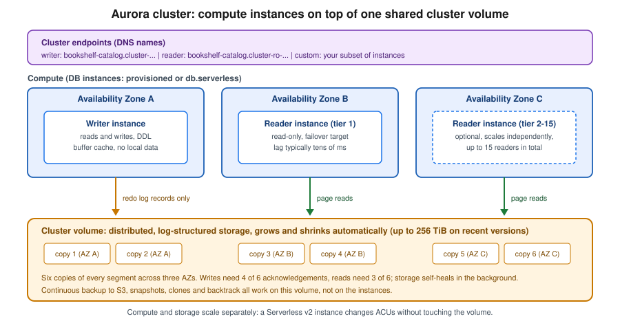

Amazon Aurora
|
This content was generated with the assistance of AI and should be verified against the official documentation before being relied on in production. |
Commands and behaviour on this page are current for AWS CLI v2 (2.37 line) and the Aurora documentation as checked on
2026-10-01: Aurora Serverless v2 capacity of 0 to 256 ACUs with auto-pause on Aurora PostgreSQL 16.3, 15.7, 14.12 and
version 13.15 or later and Aurora MySQL 3.08.0 or later, and Aurora DSQL (generally available since May 2025). Examples use
us-east-1 and the placeholder account ID 111122223333; both are stand-ins for your own values. Engine minor
versions change monthly, so every example asks the CLI for the versions that exist in your Region instead of
hard-coding one.
Amazon Aurora is AWS’s cloud-native relational database, offered in two engine editions that speak the PostgreSQL and
MySQL wire protocols. Instead of attaching a disk to one server, Aurora separates a fleet of database instances
(compute) from one shared, distributed, self-healing cluster volume (storage). That separation is what makes adding a
reader take minutes, failover take seconds, clones nearly instant and Serverless v2 possible. This page covers how
the cluster is built, how to create one from the console and the CLI, the Serverless v2 capacity model (including
scaling to zero), storage configurations, the Data API, Global Database and Limitless Database, the separate
Aurora DSQL service, clones and backtrack, IAM authentication, networking, pricing drivers, troubleshooting and clean
up. The running example is Bookshelf’s bookshelf-catalog cluster (database catalog, Aurora PostgreSQL Serverless
v2, pgvector for similarity search) that the catalog-api service from ECS and Fargate
connects to.
Plain Amazon RDS (a single instance or a Multi-AZ DB cluster on ordinary EBS storage) is covered on Amazon RDS; choosing between the AWS database services is on Managed Databases on AWS. For the Azure counterparts see PostgreSQL and MySQL on Azure and Managed Databases on Azure.
Architecture
Cluster volume, writer and readers
An Aurora DB cluster is made of up to 16 DB instances plus one cluster volume:
- Cluster volume
-
A single virtual SSD-backed volume, replicated six ways across three Availability Zones in the Region regardless of how many instances exist. It grows automatically as data is added and releases space when data is dropped, up to 256 TiB on recent engine versions, and you pay only for what is used. It holds tables, indexes, system catalogs and, for MySQL, the binary log. Temporary files (sorts, index builds) live on the instance’s local storage instead.
- Writer instance
-
The one instance that accepts writes and DDL. It ships redo log records, not data pages, to the storage layer, which materialises pages itself; this is why writes do not wait for checkpoints and why replicas add no write amplification.
- Reader instances (Aurora Replicas)
-
Up to 15 read-only instances that attach to the same volume. Replica lag is typically tens of milliseconds because readers only have to invalidate or update their caches, not apply data. Each reader has a promotion tier (0 to 15); on failover Aurora promotes the lowest tier number, and a promotion usually completes in well under a minute.
- Cluster endpoints
-
DNS names that follow the topology: the cluster (writer) endpoint always points at the current writer, the reader endpoint load-balances connections across readers, and custom endpoints name a subset of instances (for example the large readers used for reporting). Applications should use endpoints, never instance endpoints, so failover is transparent apart from dropped connections.

Durability uses a quorum: a write is acknowledged when four of the six copies have it and a read needs three. The loss of an entire Availability Zone plus one more copy still leaves the data readable, and storage repairs failed segments from the surviving copies in the background. Because the data copies exist independently of instances, deleting a reader never deletes data; only deleting the cluster does.
Derived from What is Amazon Aurora, Amazon Aurora storage and Amazon Aurora endpoint connections.
Aurora versus RDS versus the other Aurora family members
| Option | Compute model | Storage and availability | Choose it when |
|---|---|---|---|
RDS for PostgreSQL / MySQL |
One provisioned instance, optionally a standby (Multi-AZ) and read replicas with their own copies of the data. |
EBS volumes (gp3, io2) sized in advance; failover to a standby that has its own copy. |
Smaller or steady workloads, exact community-engine behaviour, lowest entry cost. See Amazon RDS. |
Aurora provisioned |
Fixed instance classes (for example Graviton |
Shared cluster volume, six copies, readers share it, fast failover, up to 15 readers. |
Steady, performance-sensitive relational workloads that benefit from fast failover and many readers. |
Aurora Serverless v2 |
Instances of class |
Same shared cluster volume. |
Variable, spiky, unpredictable or intermittent workloads, dev and test, multi-tenant fleets. Bookshelf’s catalog. |
Aurora Global Database |
A primary cluster plus up to several read-only secondary clusters in other Regions. |
Storage-level replication, typically under a second of lag; cross-Region failover or switchover. |
Disaster recovery across Regions, local reads for users abroad. |
Aurora Limitless Database |
A sharded PostgreSQL-compatible cluster that scales writes horizontally across many routers and shards. |
Managed horizontal partitioning. |
Write throughput or data size beyond a single writer. |
Aurora DSQL |
A separate, serverless, distributed SQL service with no instances to size or patch. Active-active across Regions. |
Managed by the service; strongly consistent across Regions. |
Very high availability across Regions with PostgreSQL-compatible SQL and an application that tolerates optimistic concurrency retries. |
The comparison of the three Aurora compute shapes Bookshelf could pick between:
Editions and versions
Aurora PostgreSQL tracks community PostgreSQL major versions (several are available at any time) and supports the
extensions most applications need, including pgvector for embeddings (see
PostgreSQL & pgvector). Aurora MySQL 3 is compatible with MySQL 8.0; newer MySQL
compatibility lines appear on the Aurora MySQL release notes, and older majors (PostgreSQL 11 and 12, MySQL 5.7
compatible Aurora MySQL 2) are past standard support, where Extended Support fees apply if you keep running them.
Older guides still show Aurora with those versions and with --engine-mode serverless clusters; both are outdated.
List what your Region offers instead of copying a version number from a tutorial:
export AWS_REGION=us-east-1
aws rds describe-db-engine-versions --engine aurora-postgresql \
--query 'DBEngineVersions[].EngineVersion' --output text | tr '\t' '\n' | tail -n 8
# only versions that can run Serverless v2 with auto-pause (MinCapacity 0)
aws rds describe-db-engine-versions --engine aurora-postgresql \
--query 'DBEngineVersions[?ServerlessV2FeaturesSupport.MinCapacity==`0`].EngineVersion' --output text
aws rds describe-orderable-db-instance-options --engine aurora-postgresql \
--db-instance-class db.serverless --query 'OrderableDBInstanceOptions[0].EngineVersion'Derived from
aws rds describe-db-engine-versions,
Database engine updates for Amazon Aurora PostgreSQL and
Database engine updates for Amazon Aurora MySQL.
A version supports auto-pause when ServerlessV2FeaturesSupport.MinCapacity is 0; if the structure is absent from your
CLI’s output, upgrade the CLI or use the version table in the Serverless v2 capacity documentation.
Storage configurations: Standard and I/O-Optimized
Every cluster uses one of two storage configurations, selected with the CLI --storage-type value:
| Console name | --storage-type |
Billing shape |
|---|---|---|
Aurora Standard |
|
Instance (or ACU) hours, storage per GB-month, plus a per-million-requests charge for I/O. Cheaper when I/O is moderate. |
Aurora I/O-Optimized |
|
Higher instance (or ACU) and storage rates but no per-request I/O charge; predictable. AWS’s guideline is that it pays off when I/O spend is about a quarter or more of the total Aurora bill. |
You can switch from Standard to I/O-Optimized once every 30 days, and back at any time; for Serverless v2 (and other
non-NVMe) instances no restart is needed. Check the cost split first (VolumeReadIOPs, VolumeWriteIOPs in
CloudWatch, or Cost Explorer’s Aurora I/O usage type) rather than guessing. Bookshelf starts on Standard and is
revisited after a month of real traffic.
Aurora Serverless v2
Aurora Serverless v2 is a compute mode of ordinary Aurora clusters, not a separate product. You give each cluster a capacity range in Aurora capacity units (ACUs: roughly 2 GiB of memory plus matching CPU and networking) and every Serverless v2 instance in the cluster scales itself between the minimum and maximum, measured every second, without dropping connections or waiting for a quiet moment. It is the right default for new variable workloads, and it replaced Aurora Serverless v1.
Aurora Serverless v1 (--engine-mode serverless, --scaling-configuration, the "capacity pause" with
connection-draining scaling, Data API only on v1) reached end of life on 2025-03-31 and no longer exists. Older
guides and tutorials that create serverless engine-mode clusters, or that call it "Aurora Serverless" without a
version, describe that retired product; the current equivalent is Serverless v2, which scales in place, supports
readers, Multi-AZ, Global Database, IAM authentication and the Data API, and can pause when idle.
Capacity model
-
Range. The minimum can be
0(auto-pause) or0.5and up; the maximum goes up to 256 ACUs. A minimum of 0 needs the engine versions listed in the intro; older versions bottom out at 0.5 ACUs, and some older engine versions top out at 128 ACUs. The platform version also matters and Aurora upgrades it with maintenance, a restart or a blue/green deployment. -
Granularity. Scaling happens in steps as small as 0.5 ACUs; the larger the current capacity, the larger and faster the step. Scale-up is quick; scale-down is deliberately gradual.
-
Per instance. Each writer and reader scales on its own within the same range. A reader in promotion tier 0 or 1 tracks the writer’s capacity (so a failover target is never smaller than the writer); readers in tiers 2 to 15 scale independently, which suits reporting readers.
-
Mixed clusters. A cluster may combine provisioned and
db.serverlessinstances, for example a large provisioned writer with serverless readers, or the reverse. -
Parameters. Memory-related parameters scale with capacity, while
max_connectionsis derived from the maximum ACU setting so connections do not drop when the instance scales down. A tiny maximum therefore means a low connection limit; size it for the number of pooled connectionscatalog-apiopens. -
Buffer cache. A minimum that is too low discards the cache during idle periods and makes the first queries after a quiet spell slow. Pick a minimum large enough to hold the working set.
Scaling to zero (auto-pause)
With a minimum capacity of 0, an instance pauses after a configurable idle period (SecondsUntilAutoPause,
minimum 300 seconds, default 300, maximum 86,400) with no user-initiated connections, and instance charges stop
(storage and backups are still billed). A connection attempt, a Data API call, a parameter group change, a clone,
a backtrack request or an upgrade resumes it. Details that matter in practice:
-
Typical resume time is about 15 seconds; after more than 24 hours paused it can be 30 seconds or more. Make client connect timeouts longer than that (for the PostgreSQL JDBC driver
connectTimeout, with retry logic). -
After resuming it starts at a small capacity and scales up, not at the capacity it had before pausing.
-
The writer and all readers in promotion tiers 0 and 1 pause and resume together; readers in tiers 2 to 15 can pause independently, but resuming any reader resumes the writer.
-
It does not pause while any user connection is open, while an RDS Proxy is attached (the proxy holds connections), on the primary or secondary cluster of a Global Database, with logical replication or MySQL binlog enabled on the writer and tier 0 and 1 readers, with a zero-ETL integration to Amazon Redshift, or when any provisioned instance is in the cluster.
-
Scheduled jobs inside the database (
pg_cron, the MySQL event scheduler) do not wake an instance and are skipped while paused.
So the Bookshelf production cluster uses a minimum of 0.5 ACUs (always on, fast), while the development and staging clusters use a minimum of 0 with a 10-minute pause.
Creating the Bookshelf catalog cluster
Prerequisites: a VPC with private subnets in at least two (ideally three) Availability Zones (see VPC Networking), and a security group for the application tier. Aurora needs a DB subnet group listing those subnets; the cluster’s instances are placed in them and the subnet group cannot span VPCs.
In the AWS Management Console
-
Open Amazon RDS in the
us-east-1Region (check the Region selector) and choose Create database. -
Choose Standard create, engine type Aurora (PostgreSQL Compatible), and an engine version that supports Serverless v2 and, for scale to zero, auto-pause. Leave the Aurora Standard or Aurora I/O-Optimized storage option on Aurora Standard for now.
-
Choose a template (Dev/Test or Production; Production preselects Multi-AZ). Name the cluster
bookshelf-catalog. -
Under Credentials settings keep the master user name
bookshelf_adminand choose Managed in AWS Secrets Manager. RDS creates and rotates the secret for you and the password never appears in a template or shell history. Use the default AWS managed key or pick your own KMS key. -
Under Instance configuration choose Serverless v2, set Minimum capacity (
0for dev,0.5for production) and Maximum capacity (for example8). If the minimum is0, set the idle time before pause. -
Under Availability & durability choose to create an Aurora Replica in a different Availability Zone for production; none is fine for development.
-
Under Connectivity choose the VPC, the DB subnet group, Public access: No and a VPC security group that allows inbound TCP 5432 only from the application security group. Optionally tick Enable the RDS Data API.
-
Under Database authentication choose Password and IAM database authentication. Under Additional configuration set the Initial database name to
catalog, the backup retention period, encryption (on by default), log exports to CloudWatch Logs and Enable deletion protection for production. -
Review the estimated cost panel and choose Create database. The cluster and its first instance become Available after several minutes; the cluster page then shows the writer and reader endpoints.
With the AWS CLI
export AWS_REGION=us-east-1
export ACCOUNT_ID=$(aws sts get-caller-identity --query Account --output text)
export VPC_ID=vpc-0123456789abcdef0 # placeholder: your VPC
export DB_SUBNETS="subnet-0a1b2c3d4e5f60718 subnet-0f1e2d3c4b5a69788 subnet-0a9b8c7d6e5f40312" # placeholders, one per AZ
export APP_SG=sg-0123456789abcdef0 # placeholder: catalog-api task security group
# 1. Subnet group and a security group that only the application may reach
aws rds create-db-subnet-group \
--db-subnet-group-name bookshelf-db-subnets \
--db-subnet-group-description "Bookshelf private database subnets" \
--subnet-ids $DB_SUBNETS
DB_SG=$(aws ec2 create-security-group --group-name bookshelf-catalog-db \
--description "Aurora bookshelf-catalog" --vpc-id "$VPC_ID" --query GroupId --output text)
aws ec2 authorize-security-group-ingress --group-id "$DB_SG" \
--protocol tcp --port 5432 --source-group "$APP_SG"
# 2. The cluster: Serverless v2 range 0.5-8 ACU, RDS-managed master password in Secrets Manager
aws rds create-db-cluster \
--db-cluster-identifier bookshelf-catalog \
--engine aurora-postgresql \
--database-name catalog \
--master-username bookshelf_admin \
--manage-master-user-password \
--serverless-v2-scaling-configuration MinCapacity=0.5,MaxCapacity=8 \
--db-subnet-group-name bookshelf-db-subnets \
--vpc-security-group-ids "$DB_SG" \
--storage-encrypted \
--enable-iam-database-authentication \
--backup-retention-period 7 \
--enable-cloudwatch-logs-exports postgresql \
--deletion-protection \
--tags Key=app,Value=bookshelf
# 3. Instances: a serverless writer and a serverless reader in another AZ (promotion tier 1)
aws rds create-db-instance --db-instance-identifier bookshelf-catalog-1 \
--db-cluster-identifier bookshelf-catalog --engine aurora-postgresql \
--db-instance-class db.serverless --promotion-tier 1
aws rds create-db-instance --db-instance-identifier bookshelf-catalog-2 \
--db-cluster-identifier bookshelf-catalog --engine aurora-postgresql \
--db-instance-class db.serverless --promotion-tier 1
aws rds wait db-instance-available --db-instance-identifier bookshelf-catalog-1
aws rds wait db-instance-available --db-instance-identifier bookshelf-catalog-2
# 4. Endpoints and the managed secret
aws rds describe-db-clusters --db-cluster-identifier bookshelf-catalog \
--query 'DBClusters[0].[Endpoint,ReaderEndpoint,MasterUserSecret.SecretArn,ServerlessV2ScalingConfiguration]'Derived from aws rds create-db-subnet-group, aws rds create-db-cluster, aws rds create-db-instance and Creating an Aurora Serverless v2 DB cluster.
Notes on those commands. Without --availability-zone Aurora spreads instances across the subnet group’s zones; the
cluster volume spans three zones either way. --manage-master-user-password replaces the older pattern of
generating a password and wiring up a hand-built rotation function: RDS stores the secret in Secrets Manager (named
rds!cluster-…, owned by RDS, rotation handled by RDS) and the console and describe-db-clusters show its ARN;
applications read it by that ARN, and its consumption by ECS, Lambda and EKS is on
Secrets Manager, Parameter Store and KMS. The secret is not bookshelf/catalog/db; if the application
expects that name, copy only the connection details (host, port, database) there and keep the password secret
referenced by ARN, or use IAM authentication so there is no password at all. Add --no-deletion-protection for
disposable test clusters.
Connecting and creating the schema
Reach the private cluster from inside the VPC: a Session Manager port-forwarding session through a small EC2 instance, Client VPN (VPN and Hybrid Connectivity), or CloudShell attached to the VPC. Do not make the cluster public to run a one-off script.
WRITER=$(aws rds describe-db-clusters --db-cluster-identifier bookshelf-catalog \
--query 'DBClusters[0].Endpoint' --output text)
SECRET_ARN=$(aws rds describe-db-clusters --db-cluster-identifier bookshelf-catalog \
--query 'DBClusters[0].MasterUserSecret.SecretArn' --output text)
export PGPASSWORD=$(aws secretsmanager get-secret-value --secret-id "$SECRET_ARN" \
--query SecretString --output text | python3 -c 'import sys,json; print(json.load(sys.stdin)["password"])')
psql "host=$WRITER port=5432 dbname=catalog user=bookshelf_admin sslmode=verify-full sslrootcert=global-bundle.pem" <<'SQL'
CREATE EXTENSION IF NOT EXISTS vector;
CREATE TABLE IF NOT EXISTS books (
id bigserial PRIMARY KEY,
isbn text UNIQUE NOT NULL,
title text NOT NULL,
embedding vector(384)
);
CREATE INDEX IF NOT EXISTS books_embedding_hnsw ON books USING hnsw (embedding vector_cosine_ops);
CREATE ROLE catalog_app LOGIN;
GRANT rds_iam TO catalog_app;
GRANT SELECT, INSERT, UPDATE, DELETE ON ALL TABLES IN SCHEMA public TO catalog_app;
GRANT USAGE, SELECT ON ALL SEQUENCES IN SCHEMA public TO catalog_app;
SQL
unset PGPASSWORDDownload the CA bundle (global-bundle.pem) from the
Using SSL/TLS to encrypt a connection to a DB cluster
page and keep sslmode=verify-full. The psql snippet reads the password into an environment variable for the
session only and unsets it; never write it to a file or a task definition. The schema, types, operators and HNSW
versus IVFFlat trade-offs for the embedding column are in PostgreSQL & pgvector, the
SQL itself in Data Definition Language (DDL) and Data Control Language (DCL), and transactions in
Transaction Control. Granting the rds_iam role to catalog_app is what makes IAM
authentication work for that user (next sections).
Changing capacity, adding readers, failing over
# Change the Serverless v2 range (also turns scale-to-zero on or off)
aws rds modify-db-cluster --db-cluster-identifier bookshelf-catalog \
--serverless-v2-scaling-configuration MinCapacity=0.5,MaxCapacity=16 --apply-immediately
# Dev cluster: scale to zero after 10 minutes idle
aws rds modify-db-cluster --db-cluster-identifier bookshelf-catalog-dev \
--serverless-v2-scaling-configuration MinCapacity=0,MaxCapacity=4,SecondsUntilAutoPause=600
# Add an independent, pausable reporting reader (promotion tier 2-15)
aws rds create-db-instance --db-instance-identifier bookshelf-catalog-reports \
--db-cluster-identifier bookshelf-catalog --engine aurora-postgresql \
--db-instance-class db.serverless --promotion-tier 5
# Custom endpoint that exposes only the reporting reader
aws rds create-db-cluster-endpoint --db-cluster-identifier bookshelf-catalog \
--db-cluster-endpoint-identifier reports --endpoint-type READER \
--static-members bookshelf-catalog-reports
# Test failover: the tier-1 reader is promoted, the cluster endpoint follows
aws rds failover-db-cluster --db-cluster-identifier bookshelf-catalog
# Watch what the capacity actually did
aws cloudwatch get-metric-statistics --namespace AWS/RDS --metric-name ServerlessDatabaseCapacity \
--dimensions Name=DBInstanceIdentifier,Value=bookshelf-catalog-1 \
--start-time "$(date -u -v-1H +%FT%TZ)" --end-time "$(date -u +%FT%TZ)" \
--period 300 --statistics Minimum Maximum AverageDerived from
aws rds modify-db-cluster,
aws rds create-db-cluster-endpoint and
aws rds failover-db-cluster.
The date -v-1H form is macOS; on Linux use date -u -d '1 hour ago' +%FT%TZ. In the console: RDS → Databases
→ select the cluster → Modify for the capacity range, Actions → Add reader, Actions → Failover and
Actions → Create custom endpoint. A cluster with a db.serverless writer and a minimum of 0 ACUs only pauses
when every instance in promotion tiers 0 and 1 is idle; the CloudWatch metrics ServerlessDatabaseCapacity and
ACUUtilization tell you whether the range is too narrow (pinned at the maximum) or too wide.
RDS Data API
The RDS Data API lets code run SQL over HTTPS through the AWS API with no persistent database connection, no driver and no VPC attachment: callers authenticate with IAM and the database credentials come from a Secrets Manager secret. It works on Aurora PostgreSQL and Aurora MySQL clusters, both provisioned and Serverless v2, in supported Regions and engine versions. Older guides present the Data API as a Serverless v1 feature; it now works on v2 and provisioned clusters, which makes it a good fit for Lambda functions that would otherwise exhaust connections or need VPC networking, for quick administration scripts, and for the console’s query editor. It is not meant for high-throughput, low-latency application traffic (each call is an API request and results are size-limited), and calling it wakes an auto-paused instance.
CLUSTER_ARN=arn:aws:rds:us-east-1:111122223333:cluster:bookshelf-catalog
aws rds enable-http-endpoint --resource-arn "$CLUSTER_ARN" # or --enable-http-endpoint at create time
aws rds-data execute-statement \
--resource-arn "$CLUSTER_ARN" \
--secret-arn "$SECRET_ARN" \
--database catalog \
--sql "SELECT isbn, title FROM books WHERE title ILIKE :q LIMIT 5" \
--parameters '[{"name":"q","value":{"stringValue":"%sql%"}}]' \
--format-records-as JSONDerived from
Using the Amazon RDS Data API,
Enabling the Amazon RDS Data API and
aws rds-data execute-statement.
In the console tick Enable the RDS Data API under Connectivity when creating the cluster, or choose Actions →
Enable RDS Data API on an existing one, then use Query editor in the RDS console. The caller needs rds-data
permissions (policy below) plus secretsmanager:GetSecretValue on the secret; the RDS-managed master secret works
for this. The Java SDK equivalent:
import software.amazon.awssdk.services.rdsdata.RdsDataClient;
import software.amazon.awssdk.services.rdsdata.model.*;
try (RdsDataClient data = RdsDataClient.create()) { // default credential chain: task or execution role
ExecuteStatementResponse r = data.executeStatement(ExecuteStatementRequest.builder()
.resourceArn(System.getenv("CLUSTER_ARN"))
.secretArn(System.getenv("SECRET_ARN"))
.database("catalog")
.sql("SELECT isbn, title FROM books WHERE id = :id")
.parameters(SqlParameter.builder().name("id")
.value(Field.builder().longValue(42L).build()).build())
.build());
r.records().forEach(row -> System.out.println(row.get(1).stringValue()));
}Authentication, IAM policies and secrets
Three credential models exist, and they combine:
| Model | How it works | Use it for |
|---|---|---|
Password in Secrets Manager (managed master password) |
|
Administrative access, migrations, tools that cannot do IAM. |
IAM database authentication |
The client calls |
Applications on ECS, Lambda or EKS: no stored password, access governed by the task or pod role. |
Data API |
IAM permission to call |
Connectionless access from Lambda and scripts. |
Three small policies cover Bookshelf. The operator who builds and changes the cluster (bookshelf-db-admin):
{
"Version": "2012-10-17",
"Statement": [
{
"Sid": "ManageBookshelfAuroraClusters",
"Effect": "Allow",
"Action": [
"rds:CreateDBCluster", "rds:ModifyDBCluster", "rds:DeleteDBCluster",
"rds:CreateDBInstance", "rds:ModifyDBInstance", "rds:DeleteDBInstance",
"rds:FailoverDBCluster", "rds:RebootDBInstance",
"rds:CreateDBClusterSnapshot", "rds:RestoreDBClusterToPointInTime",
"rds:BacktrackDBCluster", "rds:AddTagsToResource"
],
"Resource": [
"arn:aws:rds:us-east-1:111122223333:cluster:bookshelf-*",
"arn:aws:rds:us-east-1:111122223333:db:bookshelf-*",
"arn:aws:rds:us-east-1:111122223333:cluster-snapshot:bookshelf-*",
"arn:aws:rds:us-east-1:111122223333:subgrp:bookshelf-db-subnets",
"arn:aws:rds:us-east-1:111122223333:pg:default.*",
"arn:aws:rds:us-east-1:111122223333:cluster-pg:default.*"
]
},
{
"Sid": "DescribeAndSubnetGroups",
"Effect": "Allow",
"Action": ["rds:Describe*", "rds:ListTagsForResource", "rds:CreateDBSubnetGroup"],
"Resource": "*"
}
]
}The catalog-api task role, using IAM authentication as the database user catalog_app. The resource is the
cluster’s resource ID (cluster- followed by an opaque string), not its name; read it with
aws rds describe-db-clusters --query 'DBClusters[0].DbClusterResourceId':
{
"Version": "2012-10-17",
"Statement": [{
"Sid": "ConnectAsCatalogApp",
"Effect": "Allow",
"Action": "rds-db:connect",
"Resource": "arn:aws:rds-db:us-east-1:111122223333:dbuser:cluster-ABCDEFGHIJKLMNOPQRSTUVWXYZ/catalog_app"
}]
}A Lambda or script using the Data API:
{
"Version": "2012-10-17",
"Statement": [
{
"Sid": "RunSqlThroughDataApi",
"Effect": "Allow",
"Action": [
"rds-data:ExecuteStatement", "rds-data:BatchExecuteStatement",
"rds-data:BeginTransaction", "rds-data:CommitTransaction", "rds-data:RollbackTransaction"
],
"Resource": "arn:aws:rds:us-east-1:111122223333:cluster:bookshelf-catalog"
},
{
"Sid": "ReadTheClusterSecret",
"Effect": "Allow",
"Action": "secretsmanager:GetSecretValue",
"Resource": "arn:aws:secretsmanager:us-east-1:111122223333:secret:rds!cluster-*"
}
]
}Derived from
Creating and using an IAM policy for IAM database access,
Authorizing access to the Amazon RDS Data API and
Actions, resources, and condition keys for Amazon RDS.
Narrow the secret ARN to the specific rds!cluster-<id> secret once it exists. Generate and use an IAM token from
the CLI to prove the path end to end:
TOKEN=$(aws rds generate-db-auth-token --hostname "$WRITER" --port 5432 \
--region us-east-1 --username catalog_app)
PGPASSWORD="$TOKEN" psql "host=$WRITER port=5432 dbname=catalog user=catalog_app sslmode=verify-full sslrootcert=global-bundle.pem" -c 'select current_user'Derived from aws rds generate-db-auth-token. Tokens last 15 minutes and are only checked when a connection is opened, so an existing connection survives expiry. IAM authentication has a connections-per-second ceiling per instance, which is one more reason to pool.
Spring Boot datasource (Bookshelf catalog-api)
Use the AWS Advanced JDBC Wrapper, which adds IAM-token refresh, Secrets Manager credentials and fast failover aware
of Aurora topology on top of the normal PostgreSQL driver (add software.amazon.jdbc:aws-advanced-jdbc-wrapper and
the AWS SDK rds module to the build). The task role from the policy above supplies credentials through the default
chain:
spring:
datasource:
url: jdbc:aws-wrapper:postgresql://bookshelf-catalog.cluster-xxxx.us-east-1.rds.amazonaws.com:5432/catalog?wrapperPlugins=iam,failover2,efm2&sslmode=verify-full
username: catalog_app
driver-class-name: software.amazon.jdbc.Driver
hikari:
maximum-pool-size: 10
max-lifetime: 600000 # below the 15-minute token lifetime
connection-timeout: 30000 # longer than an auto-pause resumeWithout IAM, replace the iam plugin with awsSecretsManager and the secretsManagerSecretId property (the RDS
managed secret’s ARN). The wrapper keeps an internal view of the writer and readers, so after a failover it
reconnects to the new writer without waiting for DNS to change. For general Spring Boot data-source, profile and
secrets handling see Configuration and Profiles, and for the broader secrets
workflow Secrets Manager, Parameter Store and KMS.
Derived from the AWS Advanced JDBC Wrapper documentation and Connecting to your DB cluster using IAM authentication and the AWS SDK for Java.
Networking
-
Private by default. Place the cluster in private subnets (a DB subnet group spanning at least two Availability Zones, three for the full benefit), set
PubliclyAccessibleto false for every instance, and use a dedicated security group that allows the database port (5432 for PostgreSQL, 3306 for MySQL) only from the application’s security group. Security groups are stateful; NACLs rarely need to change. -
Reaching it from people. Session Manager port forwarding, Client VPN or a bastion with SSM; see VPN and Hybrid Connectivity. An internet-facing Aurora instance is almost never necessary.
-
From other VPCs and accounts. Peering or Transit Gateway (VPC Networking); the endpoint DNS name resolves to private addresses.
-
From AWS services without a VPC. The Data API’s HTTPS endpoint, optionally through an interface VPC endpoint (AWS PrivateLink, service
rds-data), so Lambda functions need no VPC attachment or NAT gateway. -
RDS Proxy. Pools and multiplexes connections for bursty clients such as Lambda and supports IAM and Secrets Manager credentials; it prevents Serverless v2 auto-pause, so it suits provisioned or always-on clusters (Amazon RDS covers it in depth).
-
IPv6. Dual-stack cluster endpoints are available on supported engine versions (
--network-type DUAL). -
Encryption. Storage encryption (KMS) is chosen at creation and cannot be turned on for an existing cluster except by restoring an encrypted copy of a snapshot; always connect with TLS and verify the certificate.
Backups, clones and backtrack
Aurora backs the cluster volume up continuously and incrementally to S3 and offers point-in-time restore anywhere in the retention window (1 to 35 days); the backup does not hit the writer. Manual cluster snapshots persist until deleted and can be copied or shared across Regions and accounts. A restore always creates a new cluster; you then point the application at it.
- Clones
-
A clone is a new cluster that initially shares the source’s storage pages and writes copy-on-write, so a terabyte-sized database is cloned in minutes and costs only the changed pages. Use clones for staging copies of production data, migration rehearsals and heavy analytical queries that must not touch the production writer. A clone is independent of the source after creation, may be in the same account or shared with another one, and needs its own instances.
# Clone production into a throwaway test cluster (same VPC, same subnet group)
aws rds restore-db-cluster-to-point-in-time \
--source-db-cluster-identifier bookshelf-catalog \
--db-cluster-identifier bookshelf-catalog-clone \
--restore-type copy-on-write --use-latest-restorable-time \
--db-subnet-group-name bookshelf-db-subnets --vpc-security-group-ids "$DB_SG" \
--serverless-v2-scaling-configuration MinCapacity=0,MaxCapacity=4,SecondsUntilAutoPause=600
aws rds create-db-instance --db-instance-identifier bookshelf-catalog-clone-1 \
--db-cluster-identifier bookshelf-catalog-clone --engine aurora-postgresql --db-instance-class db.serverless
# Point-in-time restore to a full copy at a past time
aws rds restore-db-cluster-to-point-in-time \
--source-db-cluster-identifier bookshelf-catalog --db-cluster-identifier bookshelf-catalog-restored \
--restore-type full-copy --restore-to-time 2026-09-30T10:15:00Z \
--db-subnet-group-name bookshelf-db-subnets --vpc-security-group-ids "$DB_SG"
# Manual snapshot, and a cross-Region copy for disaster recovery
aws rds create-db-cluster-snapshot --db-cluster-identifier bookshelf-catalog \
--db-cluster-snapshot-identifier bookshelf-catalog-pre-migrationDerived from Cloning a volume for an Aurora DB cluster, aws rds restore-db-cluster-to-point-in-time and Restoring a DB cluster to a specified time. In the console choose Actions → Create clone (or Restore to point in time) on the cluster. After a restore or clone, create instances, then re-check parameter groups, security groups, IAM authentication and Data API settings, which are not all inherited.
- Backtrack (Aurora MySQL only)
-
Backtrack rewinds a MySQL-compatible cluster to an earlier moment in place, in seconds, without restoring from a backup, which is ideal for undoing a bad
DELETEor schema change. It is enabled at creation with a backtrack window and is not available on Aurora PostgreSQL (there use point-in-time restore or a clone) and not on every engine version; check the feature-compatibility list before combining it with other features. Backtrack records change data that is billed.
aws rds create-db-cluster --db-cluster-identifier bookshelf-orders-mysql --engine aurora-mysql \
--master-username admin --manage-master-user-password --backtrack-window 86400 \
--db-subnet-group-name bookshelf-db-subnets --vpc-security-group-ids "$DB_SG"
aws rds backtrack-db-cluster --db-cluster-identifier bookshelf-orders-mysql \
--backtrack-to 2026-09-30T10:15:00ZDerived from Backtracking an Aurora DB cluster.
Scale-out and distribution options
- Aurora Global Database
-
One primary cluster in a Region plus read-only secondary clusters in other Regions, replicated at the storage layer with typically sub-second lag and no impact on the primary’s performance. Use it for cross-Region disaster recovery (managed switchover for planned moves, failover for outages) and low-latency local reads. Serverless v2 works in the primary and secondaries; neither pauses while part of a global database. Writes to secondaries are forwarded to the primary only if you enable write forwarding.
aws rds create-global-cluster --global-cluster-identifier bookshelf-global \ --source-db-cluster-identifier arn:aws:rds:us-east-1:111122223333:cluster:bookshelf-catalog aws rds create-db-cluster --region us-west-2 --db-cluster-identifier bookshelf-catalog-usw2 \ --global-cluster-identifier bookshelf-global --engine aurora-postgresql \ --serverless-v2-scaling-configuration MinCapacity=0.5,MaxCapacity=8 \ --db-subnet-group-name bookshelf-db-subnets-usw2Derived from Using Amazon Aurora Global Database. Secondary clusters in another Region need that Region’s subnet group, a KMS key there if encrypted, and their own instances.
- Aurora Limitless Database
-
A PostgreSQL-compatible, horizontally sharded mode (cluster scalability type
limitless) that spreads tables across many shards behind transaction routers for write throughput and data size beyond one writer, with capacity measured in ACUs. Choose it only after a single, well-indexed writer on the largest Serverless v2 or provisioned class is not enough; it adds sharding-key design and has its own restrictions. See Amazon Aurora Limitless Database. - Other features
-
Zero-ETL integrations replicate transactional data into Amazon Redshift and other analytics targets without a pipeline (note they stop writers from auto-pausing); Blue/Green Deployments stage major-version upgrades and parameter changes on a copy of the cluster and switch over in about a minute; machine-learning integrations and Babelfish for Aurora PostgreSQL (T-SQL compatibility) exist for specific migrations.
Aurora DSQL
Amazon Aurora DSQL (generally available since May 2025) is a different service from Aurora clusters despite the name: a serverless, distributed SQL database with PostgreSQL-compatible syntax and wire protocol, no instances, no cluster volume to size, no patching and no failover to manage, built so that a multi-Region cluster is active-active: you can read and write on either Regional endpoint with strong consistency, with a third witness Region that holds a limited transaction log for quorum but no client endpoint.
What it is good at: applications that need very high availability and low-latency writes in more than one Region, unpredictable or spiky traffic with scale to zero, and no database operations. What it is not: a drop-in replacement for every PostgreSQL feature. Always check the current compatibility page before choosing it; at the time of checking it differs from PostgreSQL in these ways:
-
One built-in database named
postgresper cluster (use schemas, or one cluster per logical database);Ccollation; UTC. -
Optimistic concurrency control: there are no row locks, conflicting transactions fail at commit with a serialization error (SQLSTATE
40001), so application code must retry. Isolation is fixed at repeatable read. Spread writes over random keys (UUIDs) to reduce contention. -
A transaction may modify at most 3,000 rows; DDL and DML cannot share a transaction, and one DDL statement per transaction; connections time out after an hour.
-
No triggers, no temporary tables, no procedural languages such as PL/pgSQL (SQL functions are supported), no
TRUNCATE, no extensions such as pgvector (so Bookshelf’s similarity search stays on Aurora PostgreSQL), andCREATE INDEX ASYNCreplacesCREATE INDEX. Foreign keys, sequences and identity columns are supported on current releases; check the linked pages for specifics and limits. -
Authentication is IAM only: there are no passwords. A client generates a short-lived token with
aws dsql generate-db-connect-admin-auth-token(for theadminrole) orgenerate-db-connect-auth-token(for custom database roles mapped to IAM roles) and uses it as the password over TLS.
In the AWS Management Console
-
Open the Aurora DSQL console and choose Create cluster, then Single-Region (or Multi-Region to pick a witness Region and a remote Region).
-
Optionally change the Name tag, add tags, choose a customer managed KMS key, keep Enable deletion protection on (the default) and optionally add a resource-based policy.
-
Choose Create cluster, wait for the status Active, then choose Connect with Query editor and connect as
adminto run SQL, or copy the endpoint forpsql. -
For multi-Region, complete the pending setup: create or choose the second cluster in the remote Region and choose Peer; the pairing is finished when both clusters show as peered.
With the AWS CLI
# Single-Region cluster
CLUSTER_ID=$(aws dsql create-cluster --region us-east-1 \
--tags Key=app,Value=bookshelf --query identifier --output text)
aws dsql get-cluster --region us-east-1 --identifier "$CLUSTER_ID" --query status
HOST="$CLUSTER_ID.dsql.us-east-1.on.aws"
export PGPASSWORD=$(aws dsql generate-db-connect-admin-auth-token --region us-east-1 --hostname "$HOST")
psql "host=$HOST port=5432 dbname=postgres user=admin sslmode=verify-full sslrootcert=system"
unset PGPASSWORD
# Multi-Region: first cluster names a witness Region; create the peer in a second Region, then peer both
aws dsql create-cluster --region us-east-1 \
--multi-region-properties '{"witnessRegion":"us-west-2"}'Derived from
Getting started with Aurora DSQL,
AWS CLI Command Reference — dsql and
Migrating from PostgreSQL to Aurora DSQL.
Complete a multi-Region pair with the console flow above or with aws dsql update-cluster --multi-region-properties
using the witnessRegion and clusters (a list of peer cluster ARNs) properties. The IAM policy for an application role is short:
{
"Version": "2012-10-17",
"Statement": [{
"Sid": "ConnectAsCustomRole",
"Effect": "Allow",
"Action": "dsql:DbConnect",
"Resource": "arn:aws:dsql:us-east-1:111122223333:cluster/abcdefghijklmnopqrstuvwxyz"
}]
}dsql:DbConnectAdmin instead grants the admin role and belongs only to operators. Map a custom database role to an
IAM role inside the database (AWS IAM GRANT) rather than sharing the admin token.
Pricing model
All prices vary by Region, engine, storage configuration and over time, so this page gives the cost drivers and no figures. Always check the dated Amazon Aurora pricing and Aurora DSQL pricing pages and model a month with the AWS Pricing Calculator.
| Cost driver | What to know |
|---|---|
Compute: ACU-hours (Serverless v2) |
Metered per ACU-hour for the capacity each instance actually uses between its minimum and maximum, measured continuously; a paused instance costs nothing for compute. Each writer and each reader is billed separately, so a cluster costs roughly instance count times current ACUs. The minimum is your floor cost. |
Compute: instance-hours (provisioned) |
Hourly per instance class, per second after a short minimum; Graviton classes are cheaper per unit of performance; Reserved Instances (and database savings plans) discount steady usage. |
Storage |
Per GB-month of the cluster volume actually used (it shrinks when you drop data), at a higher rate under I/O-Optimized. |
I/O requests |
Per million read and write requests under Aurora Standard; included under I/O-Optimized. |
Backups and snapshots |
Backup storage up to the size of the cluster volume in the Region is included; retained backups beyond it and manual snapshots are charged per GB-month. Backtrack change records are charged. |
Clones |
No copy charge at creation; you pay for the clone’s own instances and for pages it changes. |
Global Database and replication |
Replicated write I/O per million, cross-Region data transfer, and the compute of each secondary cluster. |
Data transfer and connectivity |
Cross-AZ traffic between clients and instances in other zones, Region-to-Region transfer, and the public IPv4 addresses and NAT gateways the surrounding network needs. Data API calls have their own pricing in some Regions. |
Extended Support |
An hourly per-vCPU (or per-ACU) surcharge for engine major versions kept running after the end of standard support, which can quickly exceed the instance cost; upgrade instead. |
Aurora DSQL |
Billed in Distributed Processing Units for compute, plus storage; no charge when idle apart from storage, and a multi-Region cluster consumes DPUs in each Region plus witness storage. |
Cost control for Bookshelf: use a minimum of 0 ACUs in dev and test; keep the production maximum honest (a runaway
query then costs money but cannot scale without bound); compare Standard and I/O-Optimized after a month; set an
AWS Budget (see Cost Management and Support); delete idle clones and old manual snapshots; and
stop non-production provisioned clusters with aws rds stop-db-cluster (stopped for up to seven days at a time).
Limits, quotas and recent changes
-
Up to 15 Aurora Replicas plus the writer per cluster; cluster volume up to 256 TiB on recent engine versions; default quotas per Region on clusters, instances and subnet groups can be raised through Service Quotas.
-
Serverless v2: 0 to 256 ACUs per instance; the available range depends on engine and platform version.
-
Data API: result-size and execution-time limits apply (see the limitations page linked below).
-
DSQL: 3,000 modified rows per transaction, one hour connections, the quotas page is authoritative.
-
2025-03-31: Aurora Serverless v1 reached end of life. 2025-05: Aurora DSQL generally available. Serverless v2 scale to zero (auto-pause) shipped in late 2024 and needs the engine versions in the intro. Aurora PostgreSQL and MySQL major versions leave standard support on published dates; Extended Support fees follow.
-
Older guides still show:
--engine-mode serverlessclusters and--scaling-configuration; Data API as a v1-only feature; a Serverless minimum of 0.5 ACUs as the floor; password rotation built from a custom Lambda instead of--manage-master-user-password; PostgreSQL 11 or 12 and Aurora MySQL 2; storage with no I/O line item. Prefer the current approach on this page.
Monitoring
Enable CloudWatch Logs exports, Enhanced Monitoring and CloudWatch Database Insights (the successor to Performance
Insights, see Amazon RDS). For Aurora watch ServerlessDatabaseCapacity and ACUUtilization
(Serverless v2), CPUUtilization, FreeableMemory, DatabaseConnections, AuroraReplicaLag,
VolumeReadIOPs and VolumeWriteIOPs (I/O cost), AuroraVolumeBytesLeftTotal, and BufferCacheHitRatio.
RDS events (for example failover, pause and resume, RDS-EVENT-0370 to 0374 for auto-pause) can be sent to SNS or
EventBridge (Monitoring and Observability). Slow-query diagnosis in PostgreSQL itself is on
Diagnosing and Fixing Slow Queries.
Troubleshooting
| Symptom | Likely cause | Check and fix |
|---|---|---|
Connection times out |
Security group, subnet routing, or the client is outside the VPC; the instance is public-false. |
Confirm the inbound rule from the app security group on 5432/3306, the DB subnet group, and use Session Manager
port forwarding. |
First connection after quiet period fails or takes 15 s or more |
Auto-pause resume (minimum capacity 0). |
Raise client connect timeout above 30 seconds, add retries, or set a minimum of 0.5 ACUs. |
Instance never pauses |
Open connection, RDS Proxy, Global Database, logical replication or binlog, zero-ETL, provisioned instance in the cluster, or a tier 0 or 1 reader awake. |
Read the instance log about auto-pause; check |
|
Expired token (15 minutes), user lacks |
Generate a fresh token right before connecting, |
|
|
Raise the maximum ACU, shrink pools, use RDS Proxy or the Data API. |
Capacity stuck at the maximum, slow queries |
Range too small or an unindexed or runaway query. |
Raise the maximum, inspect |
Replica lag grows |
Write-heavy workload, long-running reader queries, reader smaller than writer (tier 2-15 reader at low ACUs). |
Move the reader to tier 0 or 1, raise capacity, shorten reader queries. |
Slow after failover |
Cold buffer cache on the promoted reader, clients still using stale DNS. |
Use cluster endpoints and the AWS Advanced JDBC Wrapper; keep a minimum ACU that fits the working set. |
|
Engine version does not support the feature (MinCapacity 0, I/O-Optimized, Data API, Limitless). |
|
Data API |
Data API not enabled, missing secret permission, wrong secret or database, response too large. |
|
DSQL |
Optimistic concurrency conflict between transactions. |
Retry the transaction with backoff; shrink transactions; spread keys. |
Storage grows or I/O bill jumps |
Bloat, large temp-heavy queries, many readers scanning, snapshots retained. |
Check |
Clean up
Delete in dependency order. Deletion protection must be turned off first, and the console and CLI both offer a final snapshot, which keeps data (and keeps billing) until you delete that snapshot too.
# Aurora clusters: instances first, then the cluster
aws rds modify-db-cluster --db-cluster-identifier bookshelf-catalog --no-deletion-protection --apply-immediately
for I in bookshelf-catalog-reports bookshelf-catalog-2 bookshelf-catalog-1; do
aws rds delete-db-instance --db-instance-identifier "$I"
done
aws rds delete-db-cluster --db-cluster-identifier bookshelf-catalog --skip-final-snapshot # or --final-db-snapshot-identifier
# Clone, restored cluster and the custom endpoint
aws rds delete-db-cluster-endpoint --db-cluster-endpoint-identifier reports # before deleting its cluster
aws rds delete-db-instance --db-instance-identifier bookshelf-catalog-clone-1
aws rds delete-db-cluster --db-cluster-identifier bookshelf-catalog-clone --skip-final-snapshot
# Global Database: remove the secondary, then the global cluster
aws rds remove-from-global-cluster --global-cluster-identifier bookshelf-global \
--db-cluster-identifier arn:aws:rds:us-west-2:111122223333:cluster:bookshelf-catalog-usw2 --region us-east-1
aws rds delete-global-cluster --global-cluster-identifier bookshelf-global
# Manual snapshots, subnet group and security group
aws rds delete-db-cluster-snapshot --db-cluster-snapshot-identifier bookshelf-catalog-pre-migration
aws rds delete-db-subnet-group --db-subnet-group-name bookshelf-db-subnets
aws ec2 delete-security-group --group-id "$DB_SG"
# Aurora DSQL: turn off deletion protection, then delete
aws dsql update-cluster --region us-east-1 --identifier "$CLUSTER_ID" --no-deletion-protection-enabled
aws dsql delete-cluster --region us-east-1 --identifier "$CLUSTER_ID"Derived from aws rds delete-db-cluster, aws rds delete-global-cluster and aws dsql delete-cluster. In the console: RDS → Databases → select each instance → Actions → Delete (readers first), then the cluster; delete snapshots under Snapshots; remove the subnet group under Subnet groups; and delete DSQL clusters in the DSQL console. The RDS-managed master secret is deleted with the cluster; a customer managed KMS key you created for it is not, and is scheduled for deletion on the KMS page (see Secrets Manager, Parameter Store and KMS). In a Global Database delete the secondary clusters' instances and clusters in their own Region as well.
Related pages
-
Amazon RDS covers RDS instances, Multi-AZ DB clusters, RDS Proxy and Blue/Green Deployments.
-
Managed Databases on AWS maps every engine on this site to an AWS option and states when to pick Aurora.
-
Amazon DynamoDB is the key-value alternative, with
Ordersfor Bookshelf. -
DocumentDB and MongoDB on AWS, OpenSearch and Search on AWS and Caching, Graph and Partner Databases cover the other managed engines.
-
ECS and Fargate, AWS Lambda and Deploying Microservices on EKS are the compute that connects to
bookshelf-catalog. -
Identity and Access and Secrets Manager, Parameter Store and KMS cover the roles and secrets used above.
-
Choosing the Right Database, PostgreSQL & pgvector, SQL Reference and Comparing Vector Databases are the engine-level references on this site.
-
PostgreSQL and MySQL on Azure is the Azure counterpart.